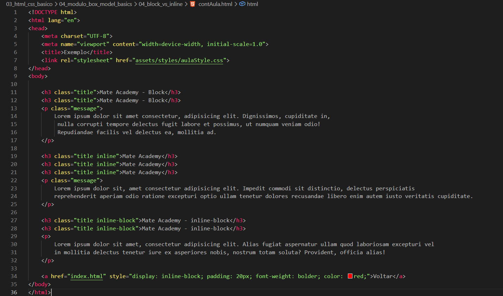
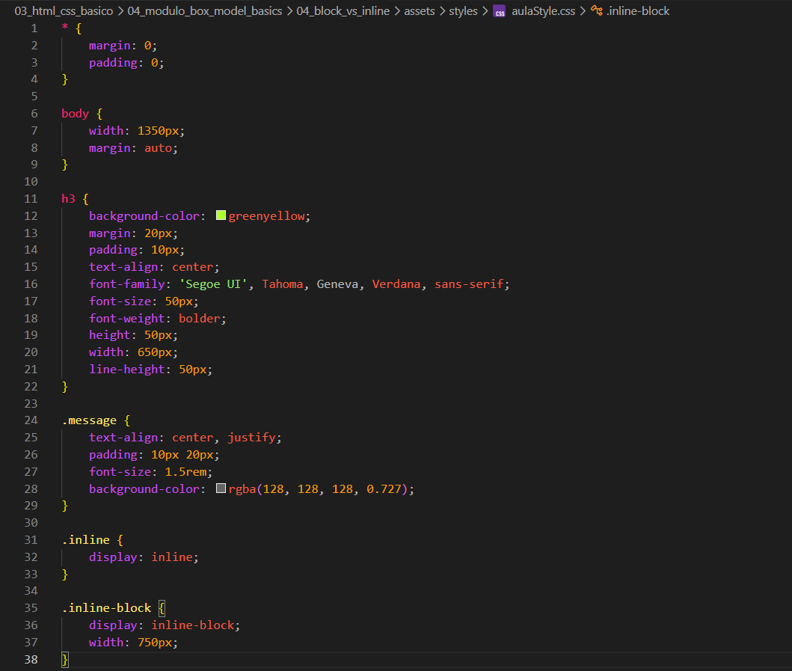

Block vs Inline
Intro
Aqui iremos ver as diferencas de elementos inline e elementos block.
Aqui iremos ver as diferencas de elementos inline e elementos block.
Para isso iremos criar dois elementos de diferentes tipos. Ira ficar da seguinte forma em nosso HTML e CSS:


Quando estamos trabalhando com um elemento block, ele ocupa todo o espaço horizontal disponível da página. Ou seja, esse elemento sempre começa em uma nova linha e não permite que outros elementos fiquem ao seu lado.
Ao contrário do block, o inline ocupa apenas o espaço necessário para o seu conteúdo. Ele não quebra a linha, permitindo que outros elementos fiquem ao seu lado, por isso é importante usar com cuidado para não bagunçar a organização do layout.
O inline-block é uma mistura dos dois comportamentos. Ele ocupa apenas o espaço necessário, como o inline, mas permite definir largura, altura, margens e espaçamentos, como o block. Além disso, ele não quebra a linha, permitindo que outros elementos fiquem ao seu lado.